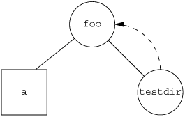

4.16. Symbolic LinksA symbolic link is an indirect pointer to a file, unlike the hard links from the previous section, which pointed directly to the i-node of the file. Symbolic links were introduced to get around the limitations of hard links.
There are no file system limitations on a symbolic link and what it points to, and anyone can create a symbolic link to a directory. Symbolic links are typically used to move a file or an entire directory hierarchy to another location on a system.
When using functions that refer to a file by name, we always need to know whether the function follows a symbolic link. If the function follows a symbolic link, a pathname argument to the function refers to the file pointed to by the symbolic link. Otherwise, a pathname argument refers to the link itself, not the file pointed to by the link. Figure 4.17 summarizes whether the functions described in this chapter follow a symbolic link. The functions mkdir, mkfifo, mknod, and rmdir are not in this figure, as they return an error when the pathname is a symbolic link. Also, the functions that take a file descriptor argument, such as fstat and fchmod, are not listed, as the handling of a symbolic link is done by the function that returns the file descriptor (usually open). Whether or not chown follows a symbolic link depends on the implementation.
One exception to Figure 4.17 is when the open function is called with both O_CREAT and O_EXCL set. In this case, if the pathname refers to a symbolic link, open will fail with errno set to EEXIST. This behavior is intended to close a security hole so that privileged processes can't be fooled into writing to the wrong files.
ExampleIt is possible to introduce loops into the file system by using symbolic links. Most functions that look up a pathname return an errno of ELOOP when this occurs. Consider the following commands:
$ mkdir foo make a new directory
$ touch foo/a create a 0-length file
$ ln -s ../foo foo/testdir create a symbolic link
$ ls -l foo
total 0
-rw-r----- 1 sar 0 Jan 22 00:16 a
lrwxrwxrwx 1 sar 6 Jan 22 00:16 testdir -> ../foo
This creates a directory foo that contains the file a and a symbolic link that points to foo. We show this arrangement in Figure 4.18, drawing a directory as a circle and a file as a square. If we write a simple program that uses the standard function ftw(3) on Solaris to descend through a file hierarchy, printing each pathname encountered, the output is
foo
foo/a
foo/testdir
foo/testdir/a
foo/testdir/testdir
foo/testdir/testdir/a
foo/testdir/testdir/testdir
foo/testdir/testdir/testdir/a
(many more lines until we encounter an ELOOP error) In Section 4.21, we provide our own version of the ftw function that uses lstat instead of stat, to prevent it from following symbolic links.
A loop of this form is easy to remove. We are able to unlink the file foo/testdir, as unlink does not follow a symbolic link. But if we create a hard link that forms a loop of this type, its removal is much more difficult. This is why the link function will not form a hard link to a directory unless the process has superuser privileges.
When we open a file, if the pathname passed to open specifies a symbolic link, open follows the link to the specified file. If the file pointed to by the symbolic link doesn't exist, open returns an error saying that it can't open the file. This can confuse users who aren't familiar with symbolic links. For example,
$ ln -s /no/such/file myfile create a symbolic link
$ ls myfile
myfile ls says it's there
$ cat myfile so we try to look at it
cat: myfile: No such file or directory
$ ls -l myfile try -l option
lrwxrwxrwx 1 sar 13 Jan 22 00:26 myfile -> /no/such/file
The file myfile does exist, yet cat says there is no such file, because myfile is a symbolic link and the file pointed to by the symbolic link doesn't exist. The -l option to ls gives us two hints: the first character is an l, which means a symbolic link, and the sequence -> also indicates a symbolic link. The ls command has another option (-F) that appends an at-sign to filenames that are symbolic links, which can help spot symbolic links in a directory listing without the -l option. Figure 4.18. Symbolic link testdir that creates a loop |